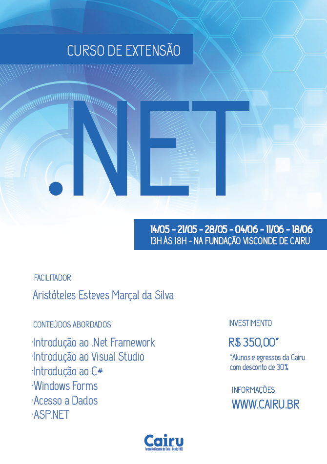

Curso de Extensão em C#.
Lançamos o Curso de “.NET”, com a linguegem C#, que acontecerá nos sábados, no período de 14/05 a 18/06/16, das 13:00 as 18:00. As vagas são limitadas e está restrita a 25 pessoas. Para garantir a participação o aluno deve fazer a inscrição no site da Cairu e confirmar o pagamento. A inscrição é aberta ao público externo e o investimento é de R$ 350,00. As inscrições feitas no mês de abril serão contempladas com um desconto de 30% (Valor final: R$ 245,00) para alunos e ex-alunos da Cairu. Esse valor pode ser dividido em 3 vezes no cartão sem juros no caixa da faculdade.
Algoritmos
Em breve a página de Algoritmos...